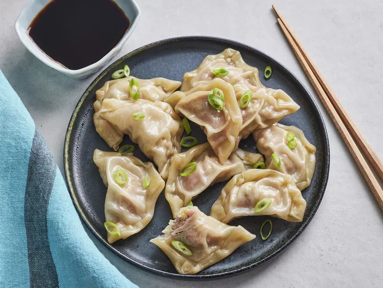

Dumplings

Description
If you're lucky enough to have an amazing dumpling plug who only
supplies the most gas dumplings, then you'll be in for a treat.
This recipe features one of the most well-known Chinese delicacies
that people love around the world.
Ingredients
- Frozen Dumplings (from reputable plug)
- Chinese black vinegar
- Lao Gan Ma (if you don't know what this then fuck off)
Steps
- Bring water in a pot to boil
- Once water is boiling, throw dumplings into pot
- Stir dumplings occasionally until water is boiling
- Once water is boiling, set a timer for 3 minutes with lid off
- Drain dumplings and move to bowl
- Mix vinegar with Lao Gan Ma for dipping sauce
- Mouth orgasm TRUE combo